Foundation Cracks and Separation
Cracks in concrete, masonry, walls, ceilings, or finishes and separation at corners, joints, trim, or connected assemblies may indicate movement, material failure, or another condition that needs investigation.
Crain Bros Inc provides foundation repair, drainage correction, waterproofing, crawlspace moisture control, house leveling, and retaining-wall services for residential and commercial properties across Northeast Arkansas.
A foundation crack, uneven floor, wet basement, damp crawlspace, leaning retaining wall, or eroded area is evidence that something is happening at the property. The visible condition does not automatically establish its cause. Effective work begins by investigating the building, foundation, soil, drainage paths, water entry points, and damage that has already occurred.
Water and soil conditions are frequently connected to foundation movement, but every property has to be evaluated on its own conditions. Roof runoff, failed gutters, short downspout discharge, negative grading, concentrated surface flow, subsurface water, plumbing leaks, erosion, soil movement, construction details, and structural loading may contribute individually or together.
Crain Bros Inc is family owned and operated since 1984. We serve residential and commercial property owners across Northeast Arkansas with investigation, construction, repair, restoration, drainage, waterproofing, and moisture-control work coordinated around the needs of the property.
Foundation movement and water problems can appear as cracks, uneven floors, sticking doors, damp masonry, standing water, erosion, damaged supports, or changing crawlspace conditions. The location and pattern of the damage help identify which parts of the property require closer inspection.
Some conditions require prompt investigation because continued movement or moisture can affect structural systems, interior finishes, insulation, mechanical equipment, indoor conditions, and personal property.
Cracks in concrete, masonry, walls, ceilings, or finishes and separation at corners, joints, trim, or connected assemblies may indicate movement, material failure, or another condition that needs investigation.
Sloping floors, bouncing areas, visible settlement, shifting supports, or changes in the position of walls and openings can be signs that the structure or its supporting soil has moved.
Openings that become difficult to operate, move out of square, or develop changing gaps may record movement elsewhere in the building.
Water at foundation walls, floor joints, penetrations, cracks, or below-grade areas may result from surface drainage, subsurface water, hydrostatic pressure, failed waterproofing, or multiple connected conditions.
Standing water, damp soil, condensation, high humidity, odors, deterioration, or microbial growth beneath the building can affect framing, insulation, mechanical systems, and occupied areas above.
Moving water can remove supporting soil, create channels, wash out slopes, expose foundation areas, undermine improvements, and redirect water toward the structure.
Leaning, bulging, cracking, separating, or displaced retaining walls may reflect soil pressure, trapped water, drainage deficiencies, erosion, material deterioration, or inadequate support.
Cleanup that is repeatedly followed by new moisture or growth indicates that the water source, drainage path, humidity condition, or building-envelope problem has not been permanently corrected.
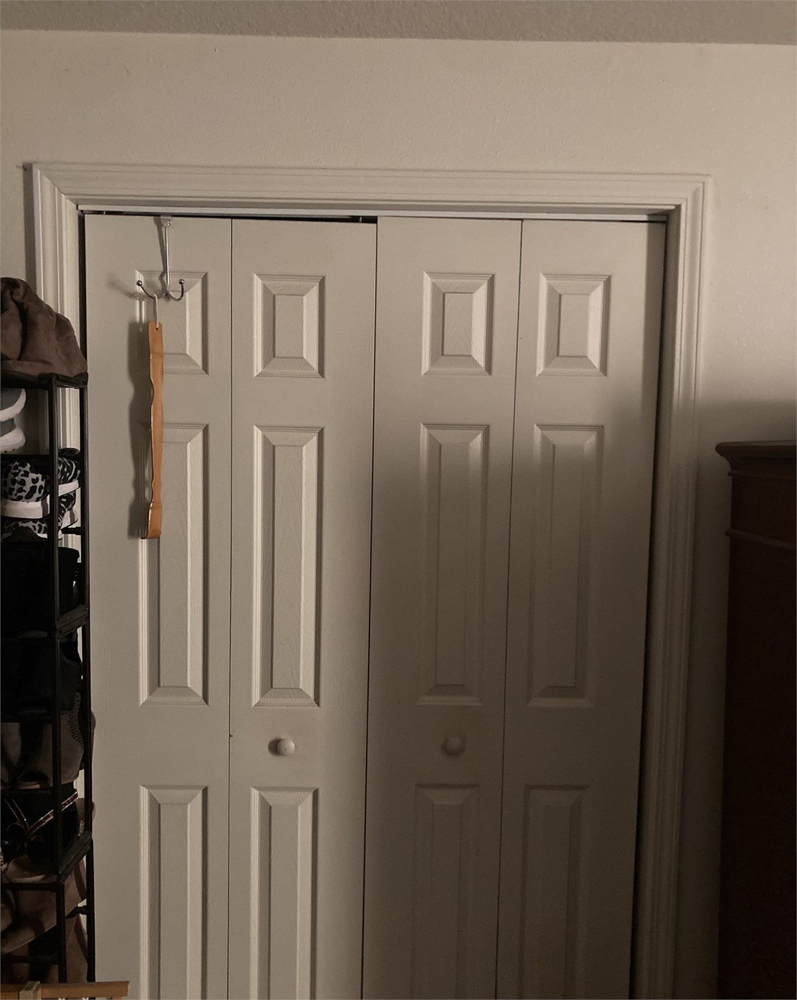

A property receives water from rainfall, roof runoff, neighboring grades, paved surfaces, groundwater, plumbing, and other sources. The way that water is collected, carried, absorbed, and discharged affects the soil and every part of the building that meets the ground.
Repeated wetting and drying can change soil conditions. Concentrated flow can erode soil. Water collected beside or beneath a structure can increase pressure against below-grade assemblies, enter basements and crawlspaces, contribute to material deterioration, and affect foundation performance.
Drainage should not be treated as an isolated landscaping detail when it affects the building. Gutters, downspouts, surface grades, swales, area drains, subsurface drains, discharge locations, waterproofing, foundation work, and erosion correction may need to function as one system.


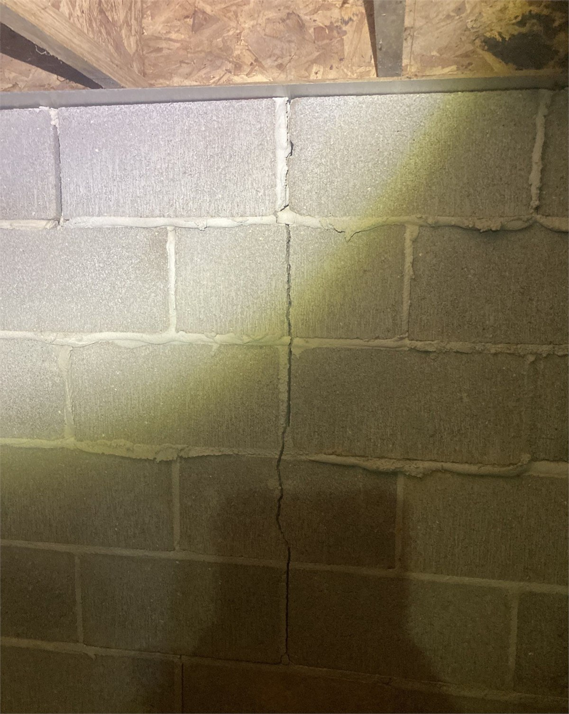
Our objective is to establish what is happening, determine why it is happening, document the affected areas, and design the work in the correct sequence. The solution should address the active cause as well as the damage the condition has already produced.
We begin with the property owner's observations, the location and history of the symptoms, changes over time, prior repairs, known water events, and conditions associated with rainfall or seasonal changes.
The inspection can include the exterior, roof drainage, grades, foundation, basement, crawlspace, structural supports, interior indications, retaining features, erosion areas, and accessible concealed conditions.
We evaluate where water originates, how it reaches the property, where it collects, how it enters or moves beneath the building, and where existing drainage systems discharge.
Cracks, settlement, movement, support conditions, erosion, soil loss, drainage, and connections between building components are considered together rather than as unrelated symptoms.
Water, humidity, movement, mold, deterioration, damaged finishes, affected insulation, and structural concerns are documented so cleanup, removal, repair, and reconstruction can be coordinated.
An old crack or stain does not always establish a current active condition. The investigation distinguishes evidence of prior events from forces that are continuing to affect the property.
The plan may combine drainage, grading, erosion correction, waterproofing, foundation construction or repair, crawlspace moisture control, cleanup, remediation, and restoration in a deliberate sequence.
Before repaired areas are closed or covered, remaining materials, supports, cavities, crawlspaces, and work areas should be inspected to confirm that required correction, cleanup, drying, and preparation are complete.
After causes and affected conditions are addressed, Crain Bros Inc can perform the associated construction, structural repair, material replacement, finishes, and restoration work.
The final condition, installed systems, completed repairs, operating equipment, maintenance needs, and recommended observation points are documented for the property owner.
Foundation work may involve an existing structure that has cracked, moved, settled, or become uneven, or it may support an addition, rebuild, structural alteration, or new construction. The appropriate work depends on the foundation type, structural loads, soil and drainage conditions, access, existing damage, and the way the foundation connects to the rest of the building.
Repairing visible foundation damage without addressing an active drainage, erosion, soil, or water condition can leave the same forces operating after the repair is complete. Foundation construction and repair should therefore be coordinated with the cause-and-origin findings for the property.
Foundation construction and repair for footings, pads, piers, concrete, structural supports, additions, existing buildings, cracking, settlement, movement, and related construction needs.
Learn moreEvaluation and correction of uneven or displaced structural support conditions must account for the foundation, framing, load paths, bearing points, soil, drainage, and the effect that movement has had throughout the building.
Repair planning considers the crack pattern, location, material, movement history, structural connections, water conditions, soil behavior, and whether the observed condition is active.
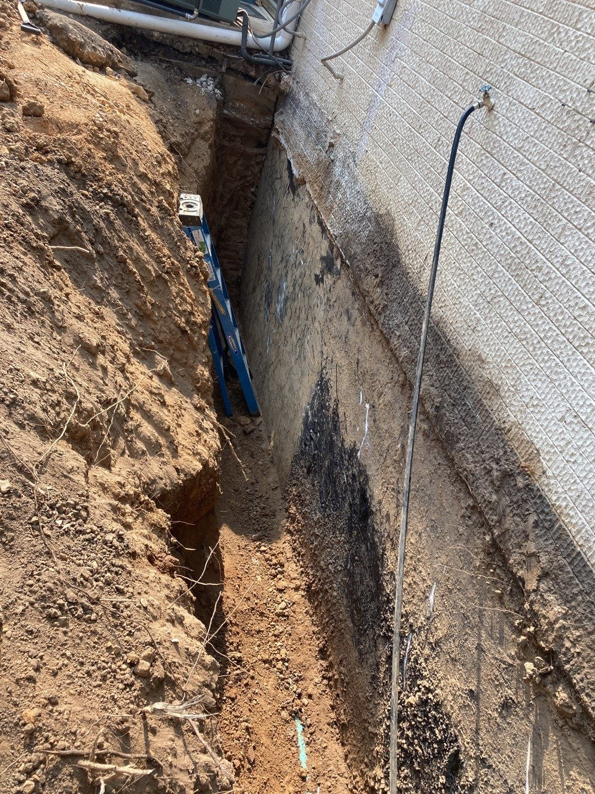
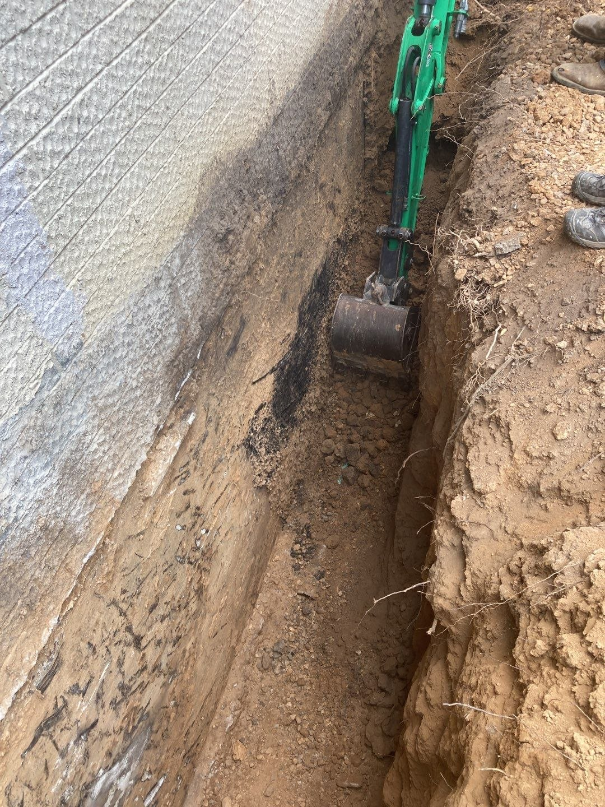
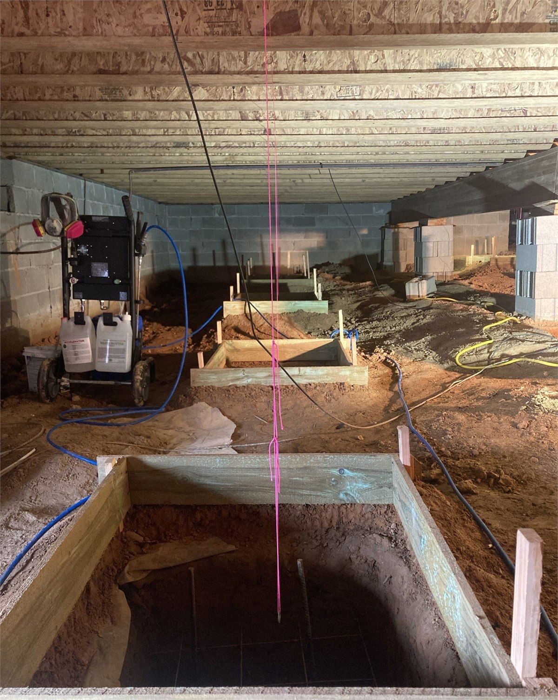
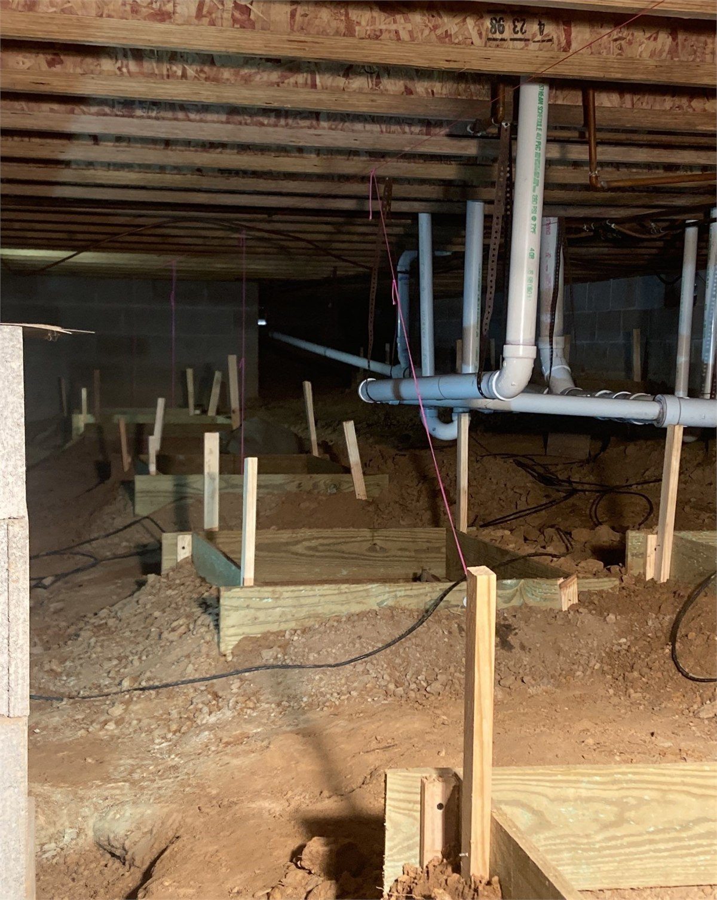
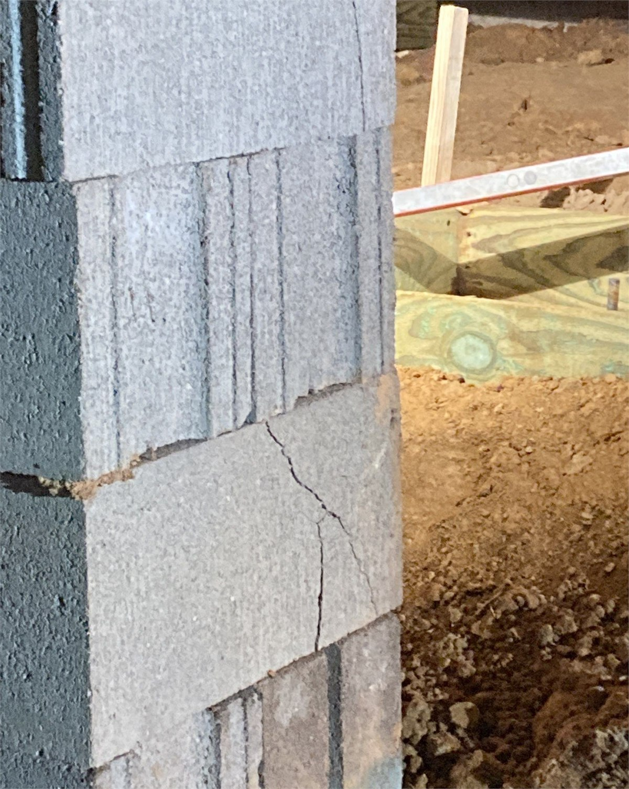
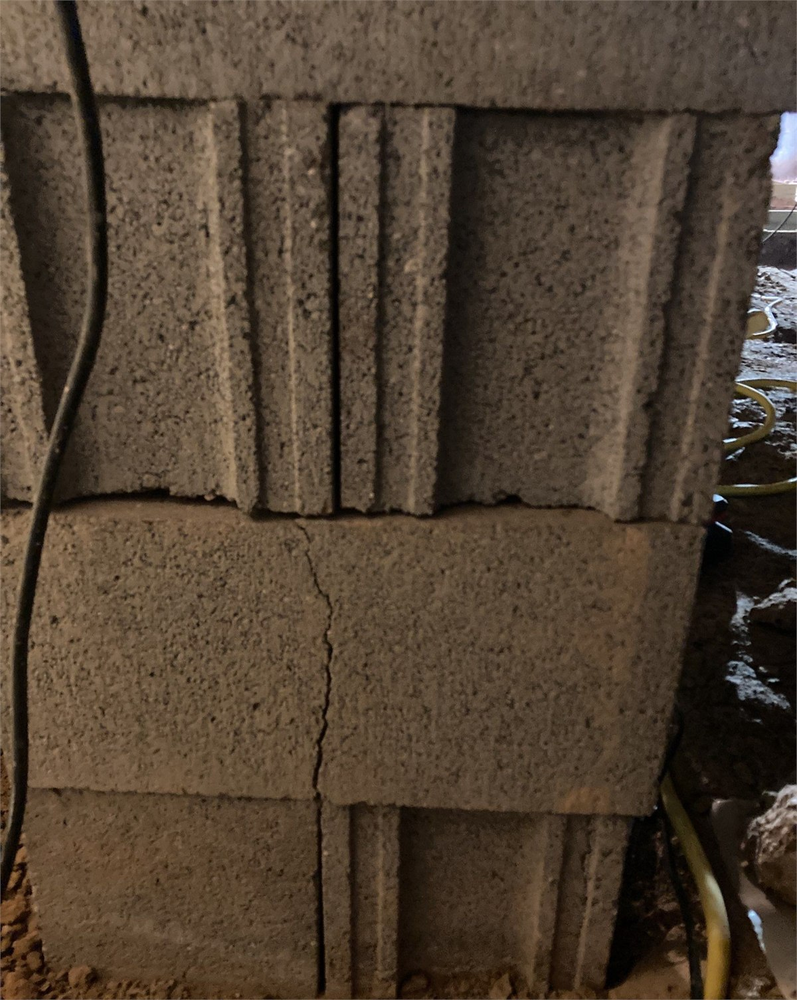
Waterproofing is intended to stop water from reaching building areas and materials that cannot tolerate it. A complete solution begins by identifying how water is reaching the structure and whether surface drainage, subsurface water, foundation details, penetrations, cracks, joints, or failed materials are involved.
Leak Detection: When the water source is uncertain, leak detection helps distinguish plumbing leaks and concealed water releases from groundwater, surface drainage, foundation seepage, condensation, and building-envelope intrusion. Identifying the source before waterproofing or restoration begins helps prevent repairs from being designed around the wrong condition.
Basement water intrusion may require more than a coating or localized patch. Exterior drainage, grading, below-grade conditions, collection systems, discharge paths, foundation repairs, interior water management, drying, and restoration may all be part of the final design.
Detailed waterproofing services for below-grade and ground-level building areas, foundation interfaces, intrusion points, and property conditions where water must be kept outside the structure.
Learn moreInvestigation and correction of water entering through foundation walls, floor and wall connections, penetrations, cracks, below-grade assemblies, or drainage conditions around the building.
Waterproofing limits entry into the structure. Drainage controls where water travels. When water is being directed or held against the building, both functions may need correction.
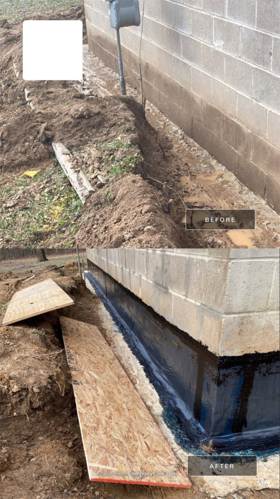
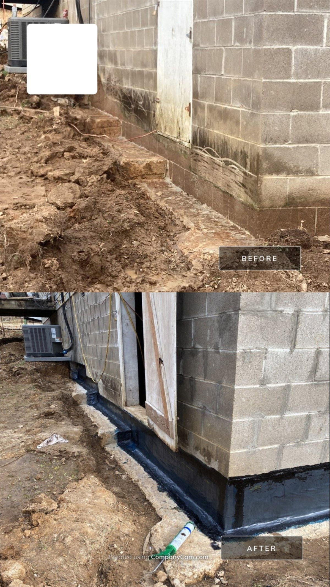
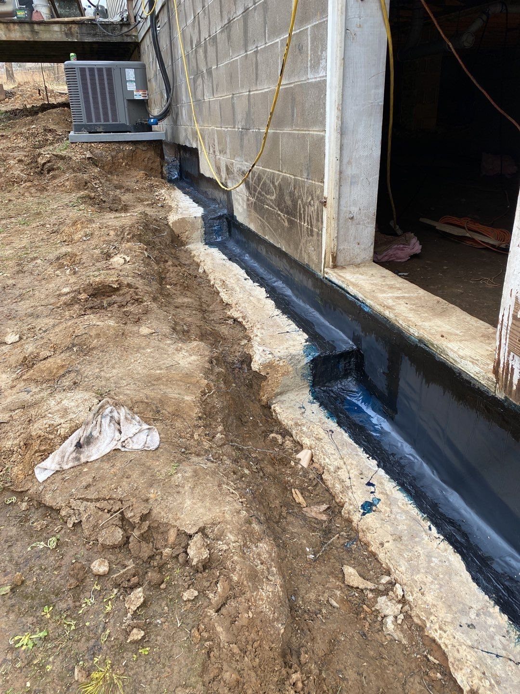
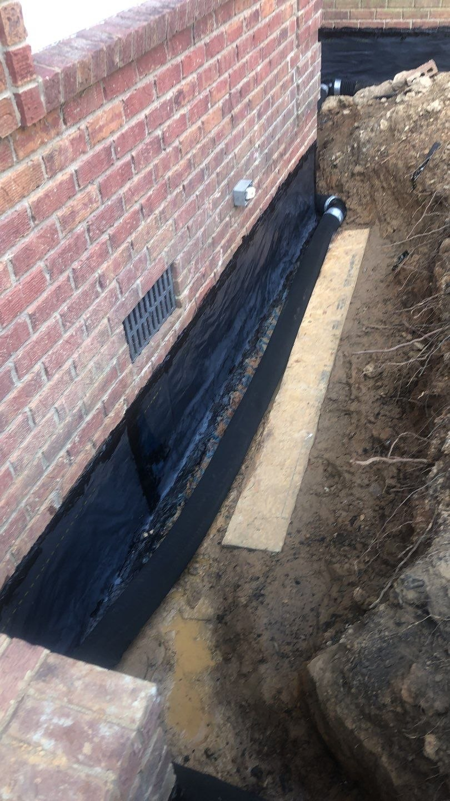
Drainage work should collect, direct, and discharge water without creating new problems elsewhere on the property. The design depends on grades, soil, structures, runoff volume, discharge opportunities, neighboring conditions, buried utilities, access, erosion risk, and the location of the problem being corrected.
A French drain is one possible subsurface drainage method, not a universal answer for every wet property. The source and route of the water must be understood before selecting the location, depth, materials, outlet, and relationship to the foundation.
Subsurface drainage designed to intercept and carry water away from affected areas where site and soil conditions support that approach.
Correction of grades, flow paths, collection points, and discharge locations so surface water moves away from the building and vulnerable property areas.
Gutters and downspouts must collect roof water and deliver it to a location that does not concentrate water beside the foundation or create erosion.
Work may include redirecting concentrated flow, stabilizing affected soil, restoring washed-out areas, protecting slopes, and correcting the water path that produced the erosion.
Where water moves beneath the surface or collects beside below-grade construction, drainage and waterproofing must be designed around the actual route and discharge conditions.
Collected water needs a dependable outlet. A drainage system that has no suitable discharge path can move the problem instead of solving it.
A crawlspace is part of the building environment. Standing water, exposed damp soil, uncontrolled outside air, plumbing leaks, failed drainage, wet insulation, condensation, and high humidity beneath the building can affect framing, subflooring, mechanical systems, indoor conditions, and occupied rooms above.
Encapsulation should be designed as part of a complete moisture-control system. Water entry and drainage conditions must be addressed first. A ground and wall vapor-control system, sealed penetrations and transitions, drainage, sump equipment where appropriate, permanent dehumidification, monitoring, access, and maintenance all need to work together.
If mold or water damage is already present, cleanup and remediation must be coordinated with correction of the moisture source. Encapsulating a crawlspace without correcting active water entry, removing damaged materials, or establishing suitable conditions can conceal the problem rather than solve it.
We identify where water originates, how it enters or collects, which materials and systems are affected, and what must change before long-term moisture control is installed.
A properly designed enclosure separates the crawlspace from ground moisture and uncontrolled exterior conditions while preserving access and coordination with structural and mechanical systems.
A permanently installed, drain-connected dehumidification system can maintain controlled humidity after water sources, drainage, and enclosure conditions have been corrected.
Where water must be collected beneath the building, drainage and pumping components require a suitable layout, dependable discharge, service access, and ongoing observation.
Wet, contaminated, deteriorated, or unsalvageable materials may require controlled removal, cleaning, drying, and replacement before the crawlspace is enclosed.
Humidity, equipment operation, drainage, visible water, odors, material conditions, and changes after major rain events should remain observable after the work is complete.


A retaining wall holds a difference in soil elevation. Water within that retained soil increases pressure and can contribute to movement, cracking, displacement, erosion, material deterioration, or failure.
Retaining-wall work should consider the wall material and geometry, retained height, soil, loads above and behind the wall, drainage, outlet conditions, erosion, nearby structures, property boundaries, utilities, access, and the consequences of continued movement.
Repairing the visible wall without correcting trapped water, soil loss, drainage, or support conditions can leave the cause of movement in place.
Evaluation includes visible movement, cracks, leaning, bulging, displacement, drainage, erosion, soil conditions, connected improvements, and water discharge.
Designed drainage relieves collected water and requires a dependable route for discharge instead of allowing pressure to build behind the wall.
The final scope depends on the wall condition, cause of movement, materials, loads, drainage, access, and whether the existing wall can be repaired or must be rebuilt.


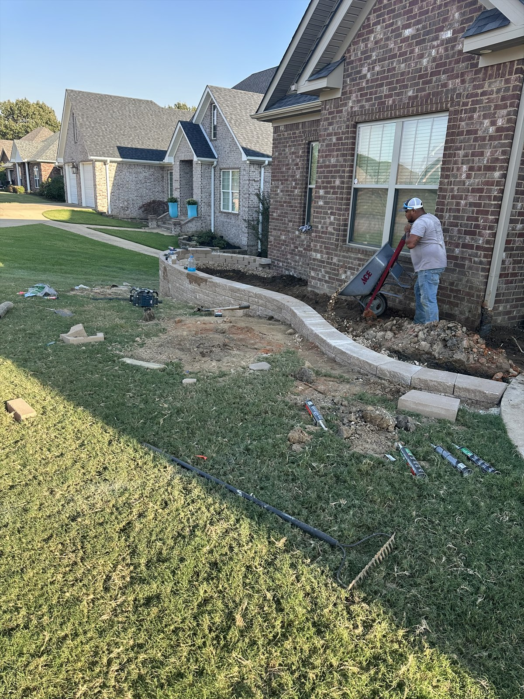


Foundation, basement, crawlspace, drainage, and waterproofing problems often cross service boundaries. Water extraction or mold remediation addresses damage that has already occurred. Drainage, waterproofing, encapsulation, dehumidification, erosion correction, and foundation work address the property conditions that allowed or produced the damage.
Crain Bros Inc can coordinate these stages so investigation, cleanup, drying, remediation, verification, construction, and restoration follow the correct sequence.
Detailed inspection and diagnosis when the source, route, extent, or interaction of the property conditions must be established before the solution is designed.
Learn moreExtraction, controlled drying, documentation, selective removal, verification, repairs, and reconstruction where water has already damaged the property.
Learn moreInvestigation, containment, remediation, cleaning, independent verification where required, and restoration when crawlspace, basement, or building moisture has contributed to mold damage.
Learn moreProperty owners can reduce risk by watching the systems that control water and by documenting changes before small conditions become larger repairs. The goal is not to diagnose a structural or moisture problem from a checklist. The goal is to notice changes early and preserve useful information for a proper investigation.
Photograph and date new cracks, gaps, stains, standing water, erosion, wall movement, floor changes, or door and window problems. Record whether they change after rain or over time.
Remove gutter obstructions, observe leaks and overflow, keep downspouts connected, and verify that discharge does not collect beside the foundation.
Observe the property during safe rainfall conditions. Note where water flows, ponds, erodes soil, crosses walks or drives, or moves toward the building.
After significant rain, safely look for standing water, damp materials, stains, condensation, odors, equipment problems, insects, damaged insulation, or visible deterioration.
Where moisture-control equipment is installed, observe humidity readings, drainage, filters, alarms, power, and whether the equipment is operating as intended.
Keep accessible discharge points open and watch for erosion, blockage, crushed piping, disconnected components, or water returning toward the structure.
Paint, coatings, finishes, insulation, or stored materials should not be used to hide recurring water, mold, deterioration, or movement before the cause is investigated.
Request an inspection when cracks grow, floors shift, openings bind, water returns, crawlspace humidity remains uncontrolled, retaining walls move, or erosion affects the property.
Drying, cleaning, patching, and finish repairs should be coordinated with correction of active water, drainage, soil, structural, or humidity conditions.
Preserve access to drains, pumps, dehumidifiers, crawlspaces, outlets, cleanouts, observation points, and other components that require inspection or service.
New or changing cracks, uneven floors, separation at walls or trim, doors and windows that bind, visible settlement, displaced supports, recurring drainage problems, and movement around connected building components are reasons to investigate. These conditions are evidence of a problem, but they do not establish the cause by themselves.
No. Crack location, direction, width, material, age, movement, surrounding conditions, and changes over time all matter. The crack should be evaluated with the structure, soil, drainage, water conditions, and other property evidence.
Water can change soil conditions, cause erosion, collect beside or beneath structures, increase pressure against below-grade assemblies, and contribute to foundation movement or deterioration. Foundation repair and drainage may therefore need to be designed together.
Possible contributors include roof runoff, negative grading, concentrated surface water, subsurface water, hydrostatic pressure, foundation cracks, wall and floor joints, penetrations, drainage deficiencies, failed waterproofing, or several conditions acting together.
Not by itself. Waterproofing is intended to keep water from entering the structure. Drainage controls where water travels and where it is discharged. A permanent solution may require both.
A French drain may be appropriate where subsurface water needs to be intercepted and carried to a suitable discharge point. Its suitability, location, depth, materials, outlet, and relationship to the foundation depend on the actual property conditions.
Active water entry, drainage problems, plumbing leaks, standing water, damaged or contaminated materials, structural concerns, and unsuitable humidity conditions should be identified and addressed as part of the encapsulation design.
After water sources, drainage, and enclosure conditions are corrected, permanent dehumidification may be used to maintain controlled humidity and protect the crawlspace environment. The equipment requires drainage, power, service access, monitoring, and maintenance.
Cleanup can remove affected materials and contamination, but lasting correction requires the water or humidity condition that supported the growth to be identified and addressed.
Yes. Retained soil can hold water, and collected water increases pressure behind the wall. Drainage and a dependable discharge route are important parts of retaining-wall design and repair.
House leveling should be planned around the support system, foundation, framing, load paths, soil, drainage, movement history, and the effects that correction may have throughout the building.
It means tracing the reported symptom back through the building, water paths, drainage, soil, foundation, crawlspace, basement, structural supports, and existing damage to determine what produced the condition before the permanent repair is designed.